For 15 years I've been the person on the other end of the line when technology stops working. I started in telecom support for Telstra, AT&T and Verizon, spent five years teaching English online, then joined an enterprise service desk for a global investment firm, where I went from Tier 1 to Team Lead in under two years. Today I cover weekends and after-hours on the helpdesk of a Chicago-based MSP/MSSP, often as the only engineer on the queue, working in Microsoft 365, Entra ID and onboarding across many client tenants.
Teaching gave me the skill I use most: active listening. Users rarely open a ticket with the real problem. I listen, ask the right questions, and find the root cause; the fix is usually the easy part. I also care about what happens after the ticket closes: knowledge-base articles people actually use, clear SOPs, and workflows that stop the same issue coming back. That thinking is how a left-shift program I led ended with the service desk taking over the work of an entire Directory Services function.
Off the clock I'm still at it. I run a Proxmox homelab managed as code, build my own PCs, and once ran a triple-boot Hackintosh. My old gamer tag was itinkerstuff, and it still fits. Next up: AZ-104 and SC-300, and a sysadmin or cloud role, ideally in New Zealand.
02 git log --careerExperience
2025 → now
Helpdesk Engineer, End User Engineering
Chicago-based MSP/MSSP · via Kalutasan
Weekend and after-hours coverage for an MSP/MSSP serving enterprise and private-equity clients. Often the only engineer on the queue.
Regularly at the top of the weekly team leaderboard: 50–100 tickets closed a week, ~30 on a busy day.
Onboarding and offboarding across many client tenants: M365 and line-of-business accounts, Partner Center licensing, encrypted credential delivery.
Email security in Mimecast; servers via LogicMonitor; endpoints via Kaseya VSA; credentials in Secret Server; ITSM in ServiceNow.
2025
MSP Engineer
Effective Consulting LLC · Miami, FL
Remote support across Windows, macOS, iOS and Android with Datto RMM.
Microsoft 365 and Google Workspace administration in hybrid and cloud-only environments.
Helped with on-prem Windows Server to Entra ID migrations; supported Ruckus and Ubiquiti networks; AppRiver email protection.
Wrote and maintained client SOPs in IT Glue.
2024 → 2025
Motorcycle taxi rider: between IT roles
[+] expandShow details
Angkas
From late 2024 until my next IT role in early 2025, I rode full time for Angkas, a motorcycle taxi service, while I applied for jobs. Same lesson as the pandemic years: when the work stops, find a way to keep going.
2024
Microsoft 365 Ambassador
Microsoft · via Upwork / GigPlus
Guided Microsoft 365 Business trial customers to the right plan, through setup and domain configuration, and introduced Copilot.
Fed customer insights back to Microsoft's product team.
2023 → 2024
IT Tech Support
Genie Health (virtual physical therapy) · via Remoworks
Supported patients and staff by voice, chat and email: 100% CSAT, ~20 tickets a day.
Built Jira Service Management templates and workflows that cut resolution time.
QA-tested app releases with DevOps; ran onboarding and offboarding; trained staff on new releases.
2021 → 2023
Senior Systems Engineer, Service Desk
Wellington Management · via Cognizant
T1 → T2 → Queue Czar → Knowledge Master → Incident Manager → Team Lead
Hybrid AD and Entra ID identity and access: provisioning, groups, shared mailboxes, distribution lists.
Led a left-shift program that moved Directory Services work to the service desk. Read the case study ↓
Led a team of 20 analysts; supervised PowerShell automation; did root cause analysis as Incident Manager.
2020 → 2021
Delivery rider: the pandemic years
[+] expandShow details
Lalamove
When the pandemic hit in March 2020, my on-site telecom support job went on floating status with no work and no date to come back. Delivery riders were among the few workers allowed through lockdown checkpoints with a RapidPass, so I got on my motorcycle and became a Lalamove rider. It kept my household afloat until I moved into IT at Cognizant in 2021.
Honest, hard work through a hard time, and something I'm proud of. It taught me to adapt fast, keep my word on tight deadlines, and treat every customer well, whether they're on the phone or on the back of my bike.
2019 → 2021
Technical Support Representative
AFNI (Verizon) · on-site
Hardware, software and network troubleshooting for Verizon customers.
2014 → 2019
Online English Teacher
[+] expandShow details
51Talk
Full-time, one-on-one 25-minute lessons: more than 20,000 over five years. Reached the Master Teacher B rank with top-tier ratings. Where I learned to explain anything to anyone, and where active listening became a habit.
2011 → 2014
Technical Support Representative
Teleperformance (Telstra) · Teletech and VXI (AT&T) · on-site
Hardware, software and network troubleshooting for Australian and US customers.
Across all four telecom accounts: 100% CSAT; repeatedly recognized as Employee of the Month and CSAT top performer; promoted to SME within ~3 months.
2009 → 2010
Sales Representative
[+] expandShow details
Aegis PeopleSupport (Sallie Mae account) · MediaLink Contact Solutions
My first contact-center roles: Sales Executive on the Sallie Mae account, and before that International Sales Rep. Where I learned to work the phones with US customers.
2007 → 2009
Communication Arts
University of the East, Caloocan
03 ls ./case-studiesCase studies
case_01_left-shift.log
Shifting Directory Services work to the service desk
problem
Access requests, such as for a network shared drive, were passed between teams. Slow, full of friction, and frustrating for users.
action
Designed and submitted ServiceNow stories for one end-to-end flow:
user requests access
manager validates path & approves
AD group task auto-created
follow-up task: remote in & map drive
with templated user messages at every step.
result
Almost no friction. The service desk took over the work of the entire Directory Services function, which made the desk more valuable to the client.
case_02_patience.log
The patient who couldn't start their therapy
situation
An elderly patient, in pain, not tech-savvy, and stuck on the app meant to guide their at-home physical therapy.
action
Stayed on the call as long as it took. Fixed every issue, then taught them step by step how to record and follow their own sessions.
result
They were emotional on the call and thanked me over and over. To them it was life-changing. That's the job.
04 ssh homelabHomelab
A small production environment I run at home, managed as code. I design the architecture, direct AI coding agents to build it, review every change, and operate it day to day.
Open-source, self-hosted family chore system. A FastAPI server, an Android TV app that sounds an alarm over the TV when a chore is overdue, and a phone app that locks until a parent approves. Kids can send photo proof.
FastAPI · Android · self-hosted
agentwatch
A read-only, animated terminal dashboard that shows in plain English what AI coding agents and their subagents are doing, so I can supervise automation as it runs.
terminal UI · AI agents · observability
The triple-boot Hackintosh
macOS, Windows and Linux on one hand-built PC, back when that meant hours of bootloaders and kexts. It's where I learned that the fastest way to understand something is to break it.
hardware · bootloaders · stubbornness
05 inventory --skillsSkills
STRONG used every day
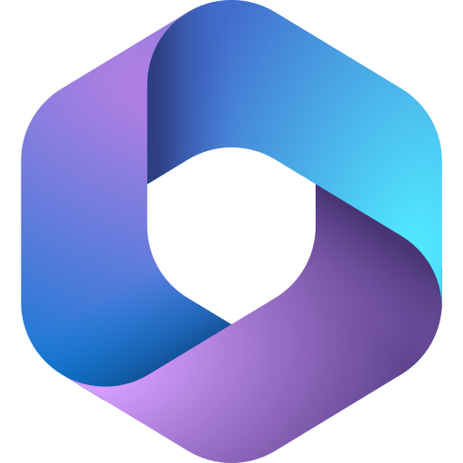
Microsoft 365
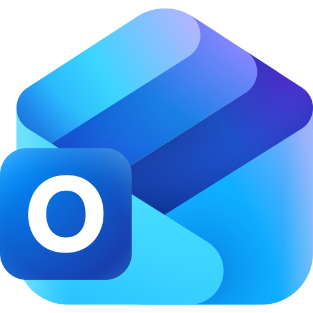
Outlook
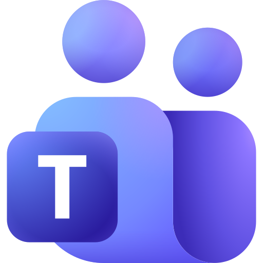
Teams
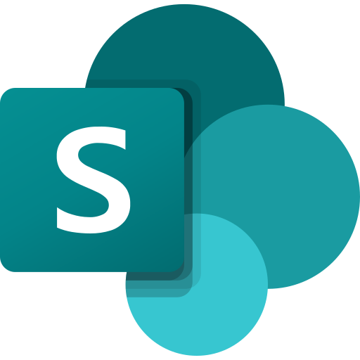
SharePoint
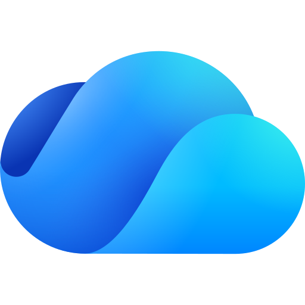
OneDrive
Exchange Online
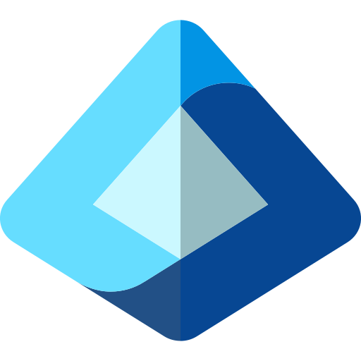
Entra ID
Active Directory
Group Policy
Mimecast
AppRiver
SPF / DKIM / DMARC
Windows
macOS
ServiceNow
Jira Service Management
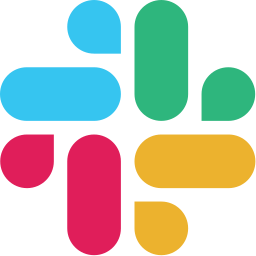
Slack
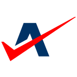
Autotask PSA
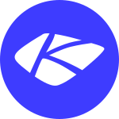
Kaseya VSA
Datto RMM
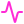
LogicMonitor
IT Glue & SOP writing
Onboarding / offboarding at scale
WORKING hands-on, homelab-proven
Intune & Autopilot
Linux
Docker / Compose
Proxmox
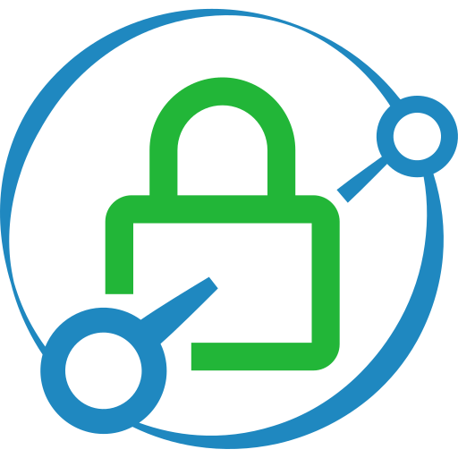
Caddy
Traefik
DNS
Cloudflare: DNS, Pages, Tunnel, Access
Google Workspace
Ubiquiti / Ruckus
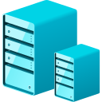
VMware · Citrix · Hyper-V · AVD
LEARNINGleveling up nowcurrently learning
PowerShell scripting
Networking
Ansible
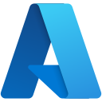
Azure administration
PEOPLEthe part that's hard to teachworking with people
★✓MS-900 Microsoft 365 Fundamentals unlocked 2023Earned 2023
◇○AZ-104 Azure Administrator quest in progressIn progress
◇○SC-300 Identity & Access Administrator quest in progressIn progress
◇○Apple Device Supportquest in progressIn progress
06 cat side-quests.txtOutside work
Motorcycle traveler. Long rides are how I recharge.
Guitarist & singer. I play and sing mostly worship songs, busk on the street, and once wrote a worship song of my own. My old gaming page is now my music page: marklesterbmusic ↗
Ex-Twitch streamer. Streamed PC games and built a following for a while. marklesterb28 ↗
PC FPS player. Still the best way to stress-test a build.
PC builder. I'd always rather build it myself than buy prebuilt.
07 ping marklesterContact
Hiring for a remote or overseas sysadmin, cloud, or MSP role? I'd love to talk. New Zealand is the dream, but I'm open to anywhere.
![Homelab network diagram. Cloudflare (DNS, Pages, email routing, and a tunnel with Access in front of the PSA) and Tailscale (a WireGuard mesh for my own devices) sit at the edge. An ISP router feeds one flat 1 Gbps LAN. A Proxmox VE host runs a VM per role: dns with AdGuard Home; caddy, running Traefik, the reverse proxy with a wildcard certificate and forward auth; hub with Forgejo, Pocket ID, Tinyauth, Homepage, Gatus, ntfy, Beszel, Renovate and Ansible; psa with ITFlow and cloudflared; vault with Vaultwarden, reachable only over Tailscale; apps with ChoreCast; and radio with SUB/WAVE, a public radio station with an AI DJ that plays the Navidrome library, published through its own Cloudflare Tunnel. A Windows desktop runs Jellyfin and Navidrome, plus WSL2 for ChoreCast Android builds. A request goes browser, AdGuard, Traefik, Tinyauth, Pocket ID passkey, then the service. Ansible, unattended-upgrades, Renovate, Gatus, Beszel and ntfy keep it running.](assets/homelab.svg)